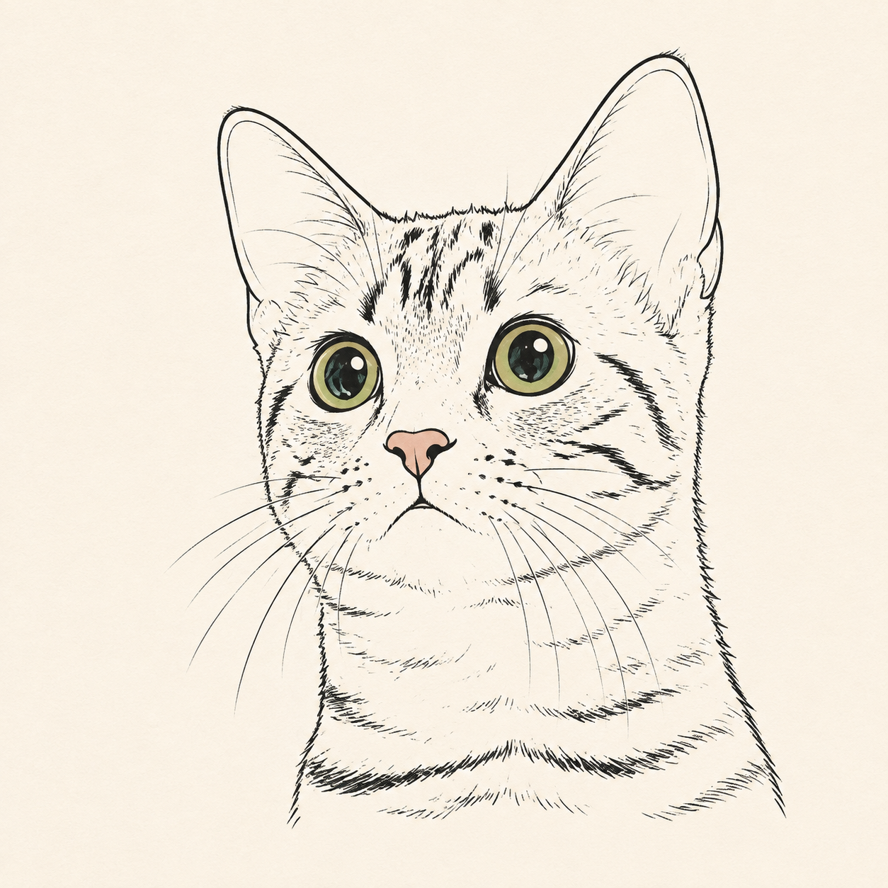

A · 线稿猫头徽记保留原图浅米色纸张背景，桌面与小屏都显示。清晰识别 猫猫万智周报标准摩登纯铁中文EN 本周环境占比统计对阵胜率八强牌表本周精选实体大赛 优点：线条和绿眼在小尺寸下仍然清晰，移动端保持同一品牌标记。注意：浅米色方形底会成为徽记的一部分。
B · 响应式线稿水印桌面使用完整水印；小屏缩为标题与语言区之间的紧凑水印。氛围最强 猫猫万智周报标准摩登纯铁中文EN 本周环境占比统计对阵胜率八强牌表本周精选实体大赛 优点：线稿比照片水印更轻；桌面保留完整猫头，小屏通过独立尺寸和锚点避免溢出，并与语言区保持间隔。